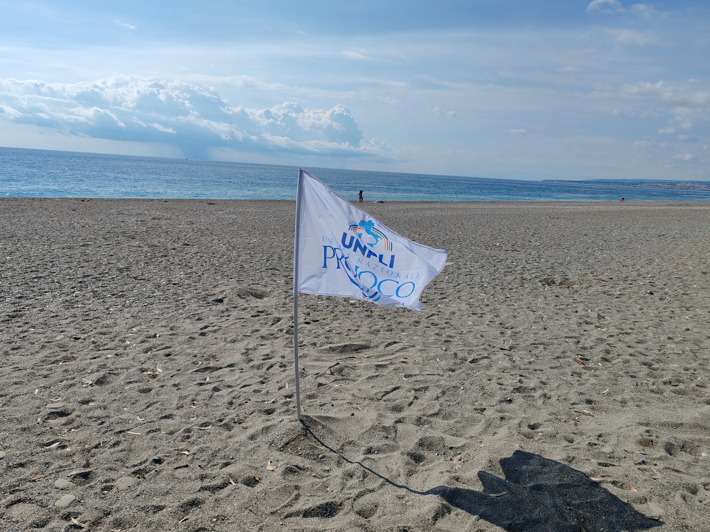
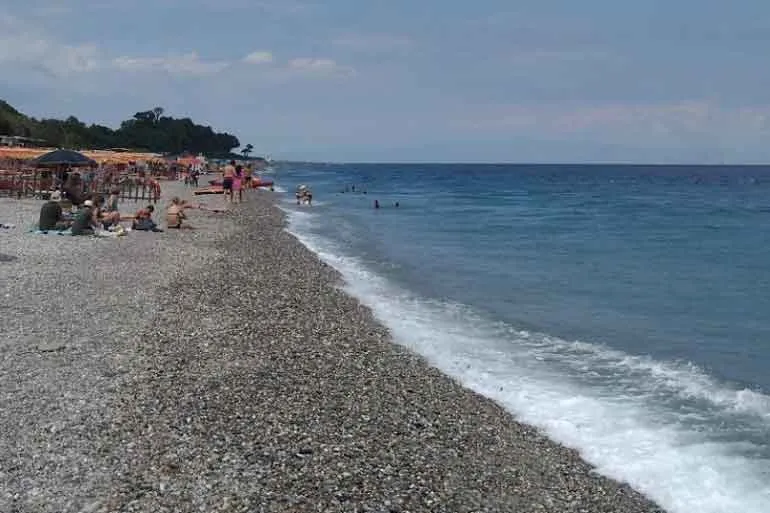
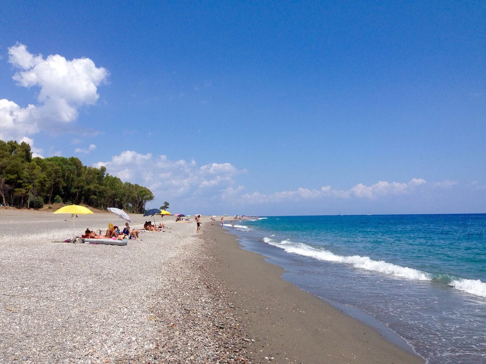
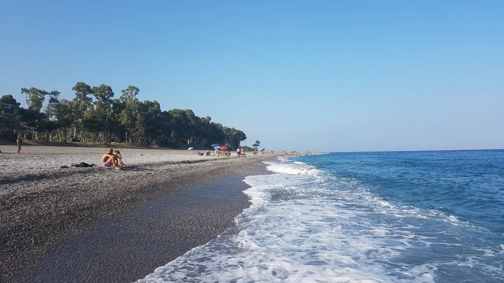

Il territorio di Calatabiano, estendendosi in parte lungo la Valle dell’Alcantara, è sorprendentemente vasto nonostante le dimensioni contenute del paese. Questa piccola realtà è considerata una preziosa gemma del territorio siciliano, ricca di cultura, tradizioni e bellezze naturali. L’area calatabianese è tra le più varie e fertili della zona ionica, grazie soprattutto alla presenza del fiume Alcantara, che contribuisce alla ricchezza del suolo e alla varietà della vegetazione locale. Da questa terra nascono prodotti di qualità, tra cui spiccano le rinomate nespole di Calatabiano, apprezzate per il loro gusto dolce e succoso. Durante la stagione della raccolta, questo frutto è protagonista della tradizionale Sagra delle Nespole, un importante momento di incontro per residenti e visitatori, dedicato alla degustazione di specialità locali e prodotti artigianali realizzati con la nespola. A soli 3 chilometri dal centro abitato si trova il suggestivo litorale di San Marco, meta molto apprezzata durante il periodo estivo sia dai turisti sia dai residenti della zona. San Marco rappresenta l’anima marinara di Calatabiano e si sviluppa lungo il tratto costiero compreso tra la foce del fiume Alcantara e l’area di Fiumefreddo di Sicilia. La spiaggia è ampia e accogliente, caratterizzata da un mare azzurro dalle acque limpide e profonde, circondata da una fascia verde di eucalipti e da distese di alberi da frutto. Da qui si gode di uno splendido panorama sull’Etna. Durante l’estate la zona si anima grazie alla presenza di lidi balneari, ristoranti e servizi dedicati ai visitatori. San Marco è il luogo ideale per rilassarsi, trascorrere giornate al mare e vivere il fascino del caldo e luminoso clima estivo siciliano.